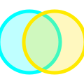

Neon estetik
Gradient stroke’lar, radial ışıklar ve yumuşak overlay’ler tek tek sahnelenir; dışarıdan ekstra sanat bağımlılığı gerektirmez.
Tek parmakla neon ritmi
Düşen "pulse" halkalarını orbunla yakala, renkleri eşleştir ve combo'ları büyüt. Her basit dokunuş, bir sonraki faza geçişin ritmini kurar.
Min SDK 24 · Compose + Kotlin · No Ads · 30MB

Pulse Weaver, Jetpack Compose ile sıfırdan yazılmış, gradient neon görselleri ve hassas gestürlerle şekillenen ritim hayatta kalma oyunudur. Oyuncular, bir orb’u ekran boyunca sürükleyerek düşen pulse halkalarıyla çarpışır, renk padleri ile eşleştirir ve faz ilerledikçe artan tempo karşısında reflekslerini sınar.
Gradient stroke’lar, radial ışıklar ve yumuşak overlay’ler tek tek sahnelenir; dışarıdan ekstra sanat bağımlılığı gerektirmez.
Skor arttıkça pulse spawn aralığı azalır. Combo’da kaldıkça zorluk kademelendirilir, böylece her run özgün olur.
Tek parmak sürükleme ve alt kısımda üç renk pad’i; renk eşleşmesi yapmadan önce hızlı seçim yapılabilir.
Compose + Kotlin ile inşa edilen kod tabanı kolayca test edilebilir, modüle edilebilir ve ileride yeni fazlar eklemeye uygundur.
Pulse Weaver, hiçbir kişisel veri toplamaz. Oyuncuya ait bilgiler hiçbir sunucuya gönderilmez, reklam takip mekanizması içermez ve uygulama içi satın alma barındırmaz. Google Play istemci kimliği, sadece Play Store yayını için gerekli olduğu zaman kullanılır. Çerez veya üçüncü taraf SDK’ları bulunmamaktadır.
Uygulamanın çalışması için kullanıcıdan yalnızca cihazın dokunmatik ekranını kullanması istenir; diğer izin talepleri yoktur. Herhangi bir veri sızıntısı durumunda bu sayfada güncelleme yapılacak ve baseraitech@gmail.com adresine bilgi verilecektir.
ou">Pulse Weaver hakkında her türlü soru, iş birliği talebi veya teknik geri bildirim için baseraitech@gmail.com adresine yazabilirsiniz.
baseraitech@gmail.com
Baseraitech
Türkiye · Remote